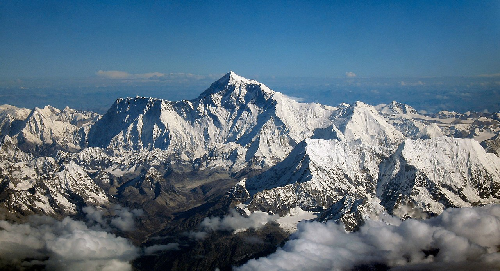
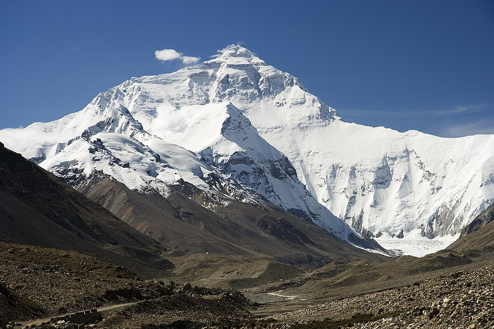
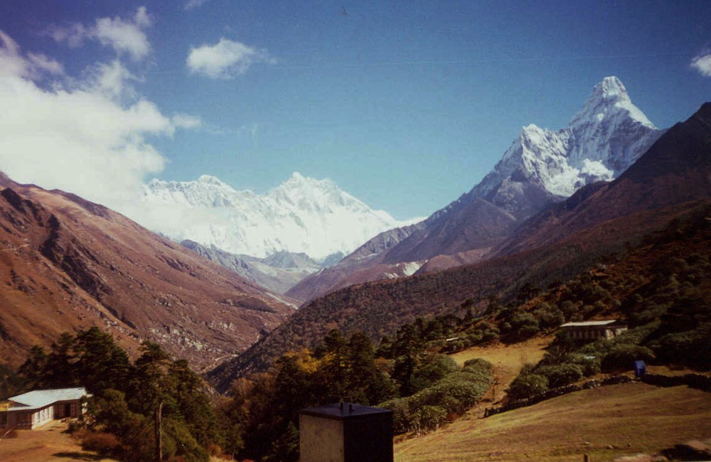
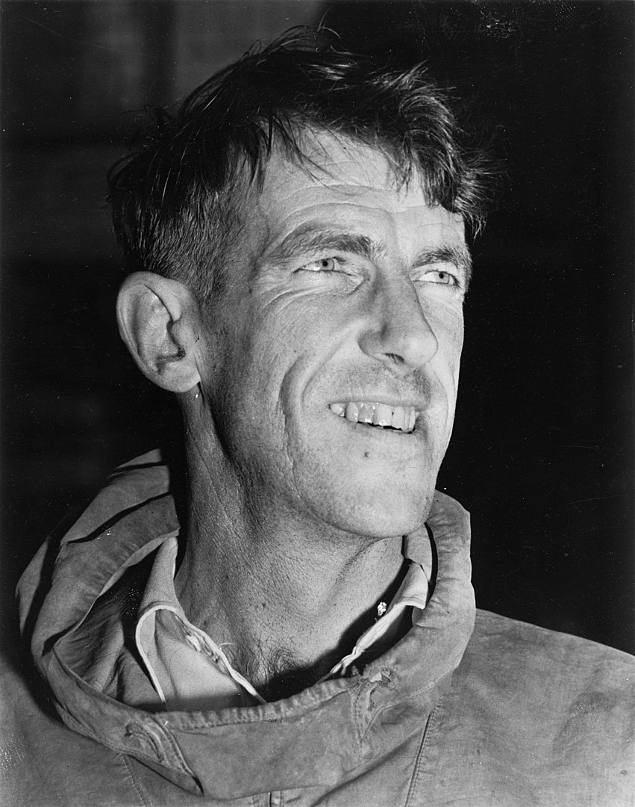
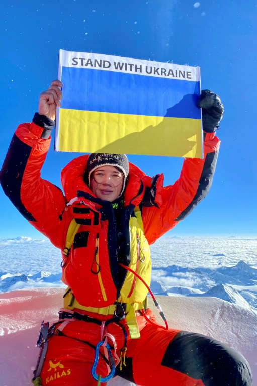
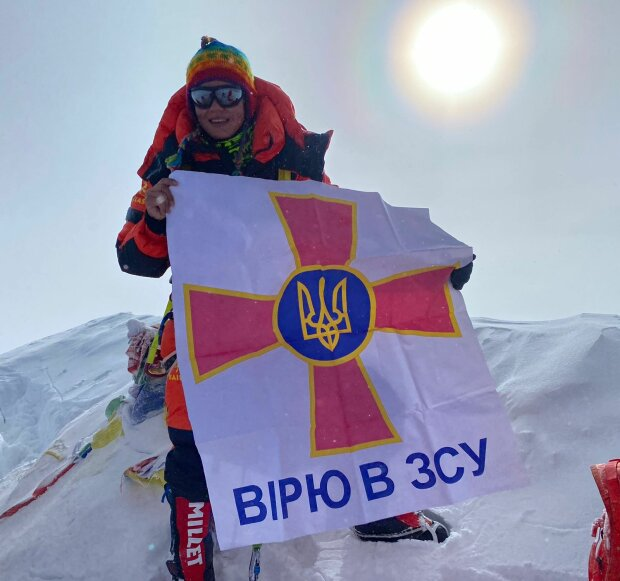
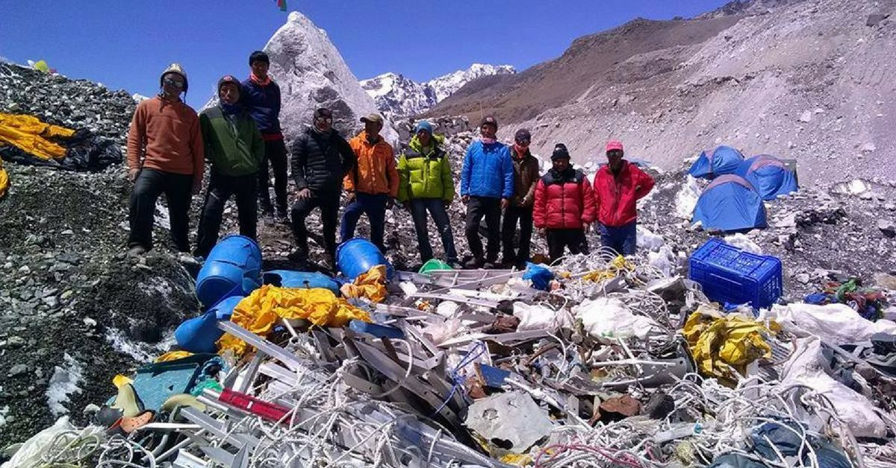

Джомолунгма
Джомолу́нгма, Эвере́ст (англ. Mount Everest) — высочайшая вершина Земли (8848,86 м).

Содержание
География
Вершина находится в Гималаях в хребте Махалангур-Химал, по которому проходит граница Непала и Тибетского автономного района (Китай).
Эверест имеет форму трёхгранной пирамиды, южный склон более крутой. На южном склоне и рёбрах снег и фирн не удерживаются, вследствие чего они обнажены. Высота Северо-восточного плеча — 8393 м. Высота от подножия до вершины — около 3550 м. Вершина состоит в основном из осадочных отложений.
С юга Эверест соединяется перевалом Южное седло (7906 м) с Лхоцзе (8516 м), называемой иногда Южной вершиной. С севера круто спадающее остро заточенное Северное седло (7020 м) соединяет Эверест с Северной вершиной — Чангзе (7553 м). На восток круто обрывается непроходимая восточная стена Кангшунг (3350 м). С массива во все стороны стекают ледники, оканчивающиеся на высоте около 5000 м.Джомолунгма частично входит в состав национального парка Сагарматха (Непал).

Климат
Средняя дневная температура на вершине Джомолунгмы в июле — порядка −19 °С, в январе — −36 °C (и может понижаться до −60 °C). Поскольку высота вершины находится почти на нижней границе высотного струйного течения, довольно характерны внезапные штормы с порывами ветра вплоть до 160 км/ч. Осадки выпадают в виде снега во время летнего муссона, продолжающегося с конца мая до середины сентября.
Названия и этимология
Первая карта Тибета была выпущена в 1719 году по результатам разведки, проведённой ламами Curqin Zangbu и Lanben Zhainba в 1712—1717 годах по указанию императора Китая. На европейской копии карты, составленной Де’Анвилем, место, примерно соответствующее расположению горы, именовалось «Tchoumou Lancma», при том, что оригинальная китайская идеограмма звучала как «Jumu Langma Alin». В Индийском обозрении 1846—47 годов гора именовалась как «Дискавери», «Пик-B», «Пик-H» и «Пик-XV», пока последний в 1856 году, по предложению руководителя геодезической службы Британской Индии Эндрю Скотта Во, не получил имя его предшественника Джорджа Эвереста.
До конца XIX века в Индийском обозрении фигурировали также такие названия, как «Jomokangar», «Jhomogangar», «Chamokankar», «Deodangar», «Bhirab Langur», «Bharab Than», «Nyanam», «Chingopamari V Gualham» и другие, но в отсутствие доказательств, что именно они являются местным названием Эвереста, ни одно из них не рассматривалось всерьёз географической наукой. Первым исследователем из Индийского обозрения, посетившим окрестности Эвереста с Непальской стороны стал Натха Сингх, он же впервые услышал название «Chholungbif». В декабре 1920 года сотрудник британского представительства Чарльз Белл, улаживавший вопросы организации первой британской экспедиции на Эверест, помимо «добра» от Далай-ламы получил пергамент, на котором на тибетском языке было написано предложение, часть которого звучала как «…монастыря страны птиц юга — Лхо Ча-Мо-Лунг». В пермите, выданном официальными властями Тибета первой британской экспедиции на Эверест, также фигурировало название «Chha-Mo-Lung Ma», это же название использовалось и в пермитах 1922, 1933 и 1936 годов. Современное название утвердилось в географической науке в 1960-х годах. В различных вариантах перевода с тибетского языка, по утверждению Белла, название может интерпретироваться как «Божественная Мать Земли» или «Божественная Мать Ветра». У шерпов в простонародье название горы интерпретируется как «Гора, над которой не могут пролететь птицы». Непальское название — «Sagannatha» — впервые появилось также в 1960-х годах в ходе демаркации границы Непала и Китая, которая проходит по вершине.

Измерения высоты
Первым определившим, что Джомолунгма является высочайшей вершиной на Земле, стал индийский математик и топограф Радханат Сикдар. В 1852 году на основе тригонометрических расчётов и компиляции данных, полученных в результате не менее шести обсерваций, он пришёл к выводу, что Пик-XV является высочайшим на Земле, а не Канченджанга, как считалось до этого. Им же была вычислена приблизительная высота восьмитысячника, которая составила ровно 29000 футов (8839 м), к которой руководитель геодезической службы Британской Индии Эндрю Во — преемник Джорджа Эвереста, добавил пару футов, чтобы расчёты Сикдара не выглядели как «округлённые». Результаты вычислений Сикдара были официально опубликованы в марте 1856 года.
Спустя 100 лет, в 1952—1954 годах индийскими топографами были проведены повторные измерения высоты вершины, и в 1955 году географической наукой была повсеместно принята её высота в 29028 футов (8848 м) над уровнем моря.
В 2005 году китайская экспедиция впервые в мире с помощью радара определила значение высоты скального уровня вершины 8844,43 м, выше которого располагался метровый слой, вероятно, камня и льда, и 3,5-метровый слой снега. С принятием этой оценки в качестве высоты горы был не согласен Непал, настаивая на классическом значении 8848 м. В 2010 году стороны пришли к компромиссу — официальная высота Джомолунгмы фиксируется на отметке 8848 м над уровнем моря, а высота твёрдой породы составляет 8844 м, а в декабре 2020 года власти Китая и Непала, наконец, согласовали официальную высоту Джомолунгмы — 8848,86 м, разница в определении которой препятствовала подписанию протокола о границе стран (немаловажную роль в этом споре сыграли учёные, высказавшие мнение, что после Непальского землетрясения она могла уменьшиться). Высота горы 8850 м также принята как фундаментальная многими специалистами в области геодезии и картографии
Эверест как объект альпинизма
Подъём на вершину занимает около 2 месяцев — с акклиматизацией и установкой лагерей. Потеря массы за восхождение — в среднем 10—15 кг. Страны, на территории которых находятся подступы к вершине, берут плату не только за восхождение на неё, а также за ряд обязательных услуг (транспорт, офицер связи, переводчик и т. п.). Устанавливается также очерёдность подъёма экспедиций. Дешевле всего взойти на Джомолунгму со стороны Тибета (КНР) по классическому маршруту с севера.
Значительная часть восхождений организуется специализированными фирмами и совершается в составе коммерческих групп. Клиенты этих фирм оплачивают услуги гидов, которые проводят необходимое обучение, предоставляют снаряжение и, насколько это возможно, обеспечивают безопасность на всём пути. Стоимость восхождения составляет до 85 тысяч долларов США, причём одно только разрешение на восхождение, выданное правительством Непала, стоит 10 тысяч долларов.
Как считают специалисты, успех экспедиции напрямую зависит от погоды и экипировки путешественников. Восхождение на Джомолунгму продолжает оставаться серьёзным испытанием для каждого, вне зависимости от степени его подготовки. Существенную роль играет акклиматизация перед восхождением на Эверест. Типичная экспедиция с южной стороны тратит до двух недель на подъём из Катманду до базового лагеря на высоте 5364 м, и ещё около месяца уходит на акклиматизацию к высоте, прежде чем совершается первая попытка восхождения на вершину.
Самый сложный участок восхождения на Эверест — последние 300 м, прозванный восходителями на гору «самой длинной милей на Земле». Для успешного прохождения этого участка требуется преодолеть крутейший гладкий каменный склон, покрытый порошеобразным снегом.
История восхождений

Первое восхождение было совершено 29 мая 1953 года шерпом Тенцингом Норгеем и новозеландцем Эдмундом Хиллари через Южное седло — по пути, разведанному накануне швейцарцами. Восходители пользовались кислородными приборами. В работе экспедиции принимали участие более 30 шерпов
Весной 1975 года Эверест впервые штурмует женская экспедиция. Первой женщиной, покорившей Джомолунгму, стала японская альпинистка Дзюнко Табэи (16 мая 1975 года). Первой европейкой, поднявшейся на вершину, стала полька Ванда Руткевич (1978).

12 мая 2022 года 33-летняя украинская альпинистка Антонина Самойлова (уроженка города Черкассы, проживающая в Киеве)совершила успешное восхождение с помощью 23 непальских шерп и с использованием кислородных баллонов по стандартному маршруту с южной, непальской стороны горы. Успешному восхождению поспособствовала прекрасная погода. На вершине было всего -17 градусов Цельсия (это очень тепло для Эвереста) и не было штормового ветра. Свое восхождение Антонина посвятила "всему украинскому народу, каждому воину, волонтеру, всем, кого коснулась жестокая война с Россией." Также на вершине Эвереста она развернула флаг Украины.

Экологическая ситуация
Согласно наблюдениям, за последние 90 лет отмечается быстрое таяние ледников как в районе Эвереста, так и в целом в Гималаях. В 2007 году только китайский участок самой высокой вершины нашей планеты посетили 40 тысяч туристов. По подсчётам экологов, после них осталось 120 тонн мусора — в среднем, по 3 кг на каждого. Непальская авиакомпания «Yeti Airlines» собрала 17 тонн мусора в окрестностях деревни Лукла, которая является перевалочным пунктом для альпинистов, идущих к основному лагерю на Эвересте. Для того, чтобы убрать такое количество пивных бутылок, пластиковых пакетов, алюминиевых банок, кислородных баллонов, верёвок и сломанных лестниц, потребовалось около 2 месяцев. В мае 2008 года силами Тибетского автономного регионального бюро по защите окружающей среды в регионе было собрано 8 тонн отходов, а в 2019 году — 11 тонн. Также весьма актуален вопрос захоронения тел погибших альпинистов, особенно для местных жителей — шерпов. С 2014 года постановлением Министерства туризма и гражданской авиации Непала было принято решение о том, что каждый альпинист, поднимающийся на Эверест, по возвращении должен вынести со склона горы не менее 8 килограммов мусора.
